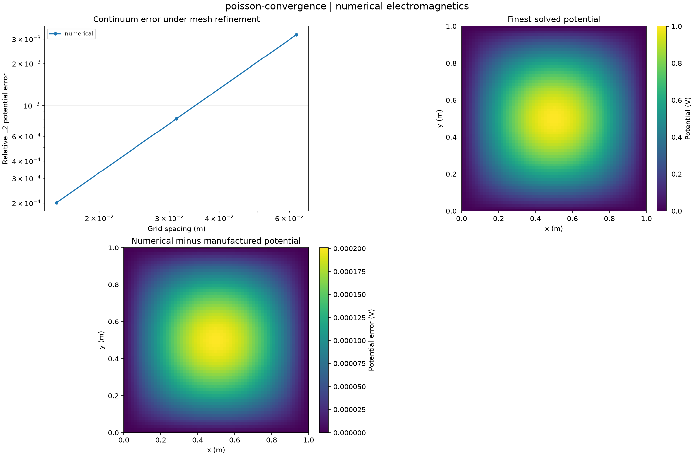

Reproducible numerical electromagnetics. Units and field components are printed on the scientific axes. Peak phasors use exp(+i omega t); outgoing waves use exp(-i k r).
Sealed numeric archive | Summary CSV | Physical parameters | Run request | Source and environment

| finest_relative_error | 0.0002008218097219554 |
|---|---|
| maximum_solver_residual | 1.4314637437097365e-13 |
| observed_order | 2.0013043882252703 |
These are simulations, not hardware measurements. Mesh, boundary, truncation and statistical uncertainty require distinct convergence checks. Singular or unilluminated data use explicit masks.
Source revision: 255b9ec965941d1fc97a04b9f7e2101e959fbeca.
Dirty checkout: False.
Configuration SHA-256: b15b94cfdfb3ba3ea59bd3d58380de1be9981fca6642866a0ea8460d307b61ac.
Replay preserves original source and parameter provenance. SHA-256 manifests detect changed bytes; they are unsigned integrity records, not certificates of physical validity.